The collection · Sculptor of the open air
Ramkinkar Baij
1906–1980
He came to Santiniketan from Bankura in 1925 and made the whole campus his gallery.
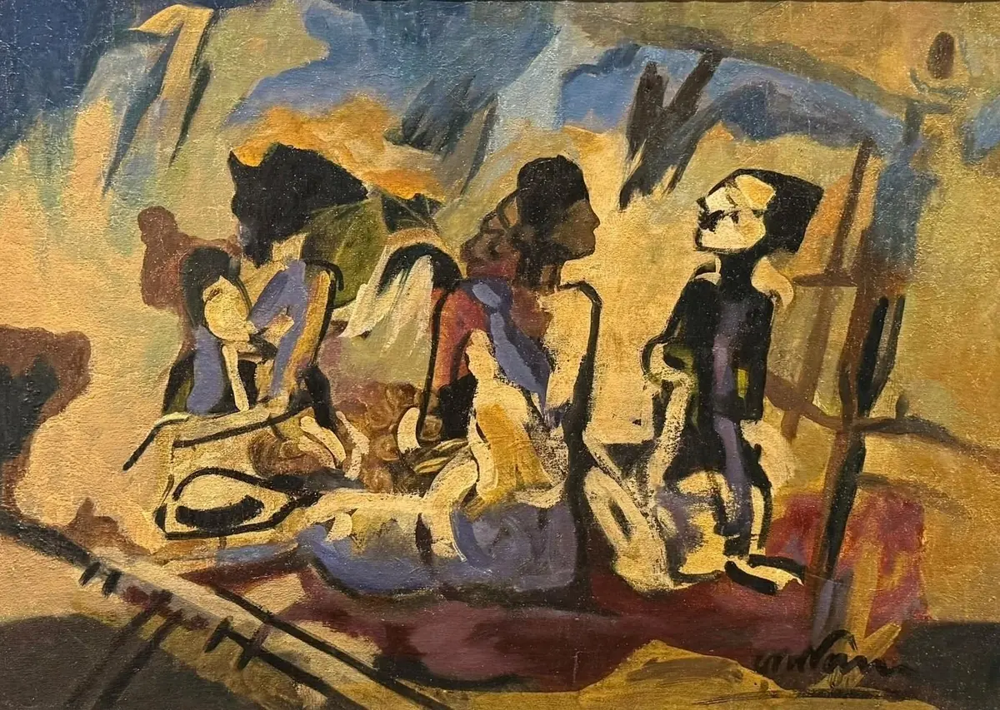
Figures by the Easel
Oil on canvas
His life
- 1906Born in Bankura, Bengal
- 1925Arrives at Kala Bhavana, Santiniketan
- 1938Santhal Family is set up on the campus
- 1970Awarded the Padma Bhushan
- 1980Dies in Calcutta
Swipe along the thread
His story
Sculptor first, painter always
Ramkinkar came to Santiniketan from a modest family in Bankura and studied under Nandalal Bose at Kala Bhavana.
Working with cement and the red laterite under his feet, he made life-size figures of the Santhal people around him and set them out under the sky: Sujata, Santhal Family, Mill Call. He painted with the same energy, in oil, pastel and watercolour, and taught at Kala Bhavana for decades.
Seventeen of his paintings and drawings are in the house, more than any other artist's but his teacher's.
Where he stands
The Santiniketan line
Taught by Nandalal, he in turn taught the students who carried Santiniketan's way of working across India.
 His teacher
Nandalal Bose
1882–1966
Led Kala Bhavana and sent his students out to draw from life.
His teacher
Nandalal Bose
1882–1966
Led Kala Bhavana and sent his students out to draw from life.- This page Ramkinkar Baij 1906–1980 He came to Santiniketan from Bankura in 1925 and made the whole campus his gallery.
- His student K. G. Subramanyan 1924–2016 Studied with him in the 1940s, then took Santiniketan's teaching to Baroda.
In the house
Ramkinkar at House of Legends
Seventeen works in our care: oils, pastels, watercolours and the drawings of a sculptor thinking on paper.
Figures by the Easel
Oil on canvas

Figures with a Fan
Mixed media on paper
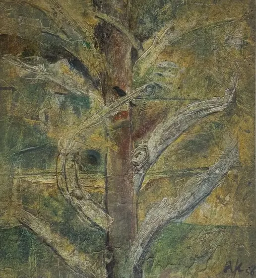
The Tree, 1956
Oil on board
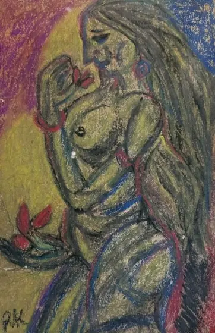
Woman with a Flower
Mixed media (dry pastel) on paper
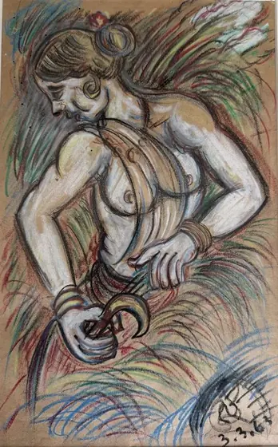
Harvest, 1963
Mixed media on paper
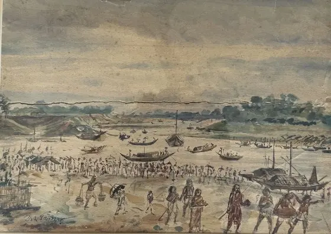
On the Riverbank
Watercolour on paper
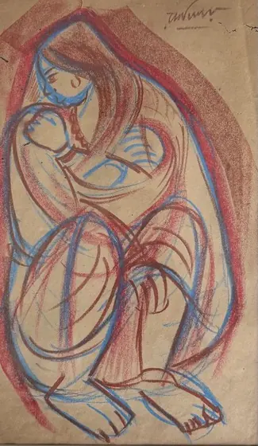
Mother and Child
Dry pastel on paper
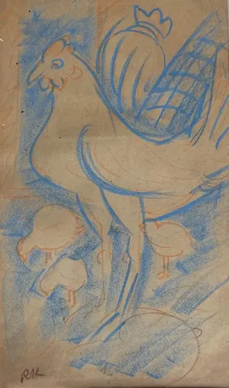
Rooster with Chicks
Dry pastel on paper
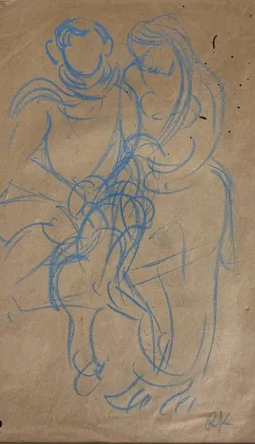
The Couple
Dry pastel on paper
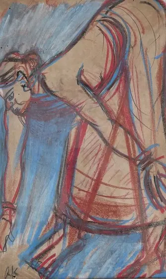
Drawing Water
Dry pastel on paper
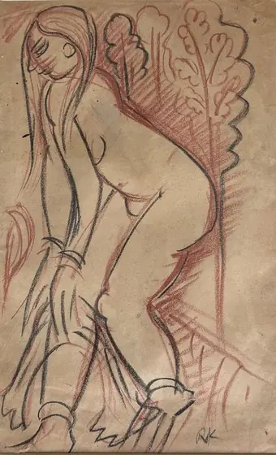
Woman by a Tree
Dry pastel on paper
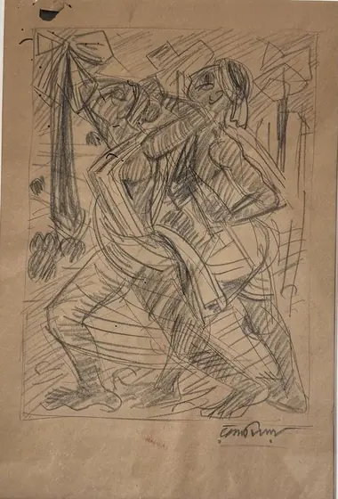
Figure in Motion
Pencil on paper
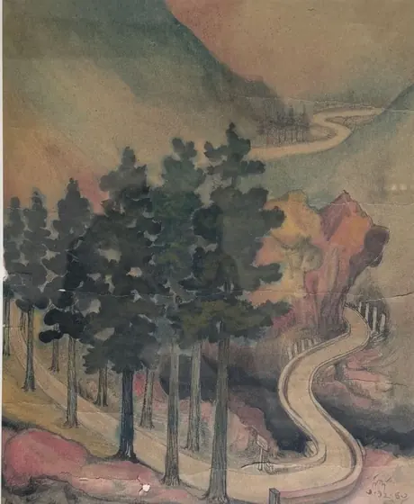
Mountain Road
Watercolour on paper
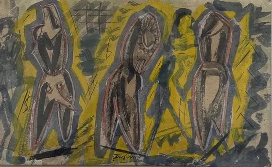
Three Figures
Watercolour on paper

Study for a Sculpture
Pencil on paper
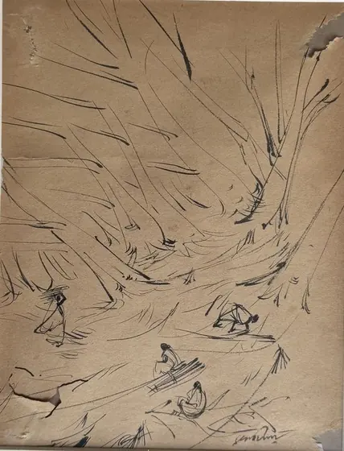
Gatherers
Pencil on paper
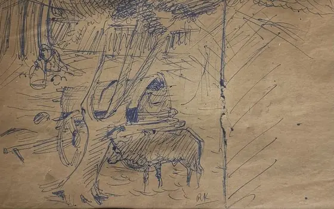
Bullock Cart
Ink on paper
Write to us
See Ramkinkar in person
Every work in the house can be seen by appointment, with its record and a condition report ready for you. If your family has kept a work by Ramkinkar Baij, we would be glad to hear about it too.